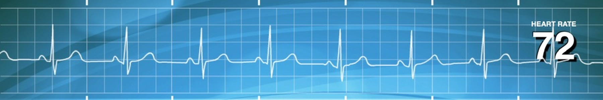
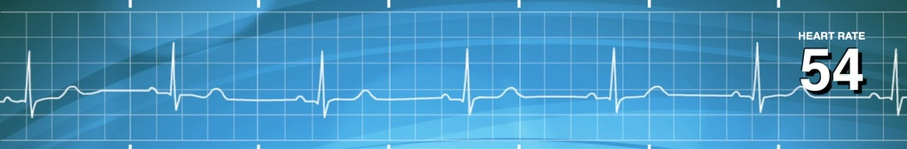
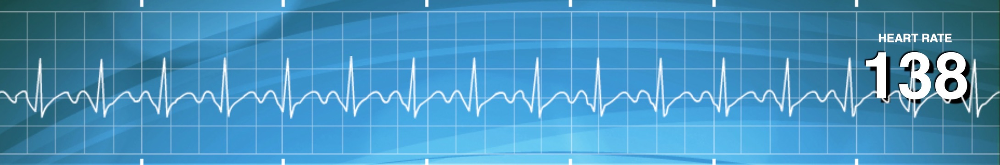
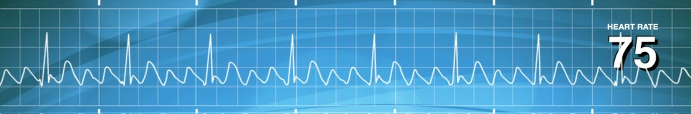
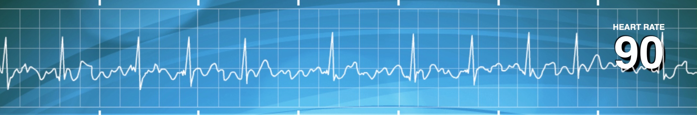
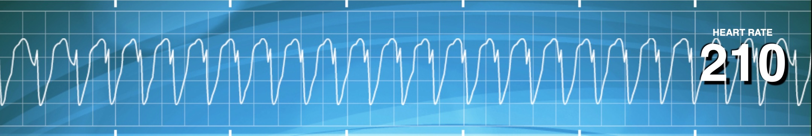
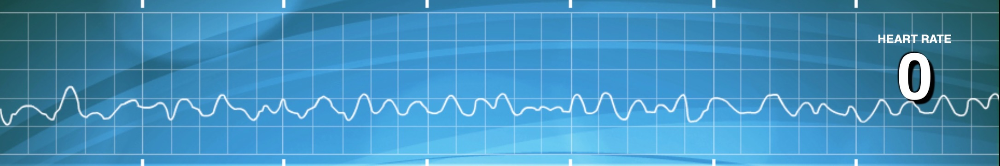
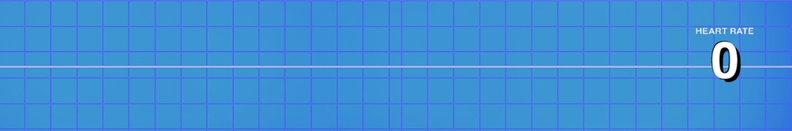

Cardiac Conduction System
How the Electrical Signal Travels
- SA Node (Sinoatrial) — pacemaker of the heart; fires at 60–100 bpm; sends wave through atria
- AV Node (Atrioventricular) — gatekeeper; pauses signal to let atria dump blood into ventricles before ventricles contract
- Bundle of His → Left & Right Bundle Branches → Purkinje Fibers → ventricles contract
Depolarization
- Na⁺ enters cell → charge goes negative → positive
- Toward a lead → bump UP on ECG
- Away from lead → dip DOWN
Repolarization
- Cell resets → positive → negative
- Toward lead → dip DOWN
- Away from lead → bump UP
Waveform Analysis (Strip Reading)
ECG Waveforms & Normal Durations
P WaveAtrial depolarization — 0.08–0.10 sec (2–2.5 small boxes)
PR IntervalSA → AV node conduction time — 0.12–0.20 sec (3–5 small boxes)
PR SegmentAV node delay — 0.04–0.12 sec (1–3 small boxes)
QRS ComplexVentricular depolarization — <0.12 sec (normal = narrow; >0.12 = wide/abnormal)
T WaveVentricular repolarization — variable 0.10–0.25 sec
U WaveNot always present — may indicate hypokalemia
⚡ Cardioversion vs. Defibrillation
Cardioversion = LOW energy, patient has a pulse, SYNC ON (shock timed to R wave)
Defibrillation = HIGH energy, patient no pulse, SYNC OFF — immediate unsynchronized shock
Cardioversion = LOW energy, patient has a pulse, SYNC ON (shock timed to R wave)
Defibrillation = HIGH energy, patient no pulse, SYNC OFF — immediate unsynchronized shock
Normal Sinus Rhythm (NSR)
✅ Normal Sinus Rhythm
60–100 bpm
- Regular rhythm, consistent P waves before each narrow QRS
- PR interval 0.12–0.20 sec, flat ST segment
- No treatment needed
Sinus Rhythms
🐢 Sinus Bradycardia
<60 bpm
- Regular rhythm, normal P waves, normal PR interval
- Originates from SA node — just slow
Symptomatic (dizzy, pale, fatigued)
Atropine — activates sympathetic NS → ↑ BP & HRMonitor BP & HR after giving
Asymptomatic
Document, monitor — no treatment needed⚡ Sinus Tachycardia
100–150 bpm
- Regular rhythm, normal P waves, normal PR interval
Treatment
Calcium Channel Blockers (Diltiazem, Verapamil) — Do NOT give to COPD patientsBeta-Blockers (Metoprolol) — reduce HR
Digoxin — toxicity: early = nausea/vomiting; late = visual halos; stop if dehydration signs
Supraventricular Rhythms
🔼 SVT — Supraventricular Tachycardia
>150 bpm.jpeg)
- Regular, narrow QRS; P waves may be hidden in preceding T wave
- Rapid rhythm originating above ventricles
Treatment — Vagal (Valsalva) Maneuver First
- Ice/cold water on face (stimulates vagus nerve CN X)
- Bear down as if having a bowel movement
- If no response → Adenosine IV (first-line drug); then Diltiazem or Beta-Blockers
- Unstable → Synchronized Cardioversion
〰️ Atrial Flutter
Atrial: 250–350 bpm
- Sawtooth-shaped flutter waves (F waves) between QRS complexes
- Risk of blood clot formation → risk of stroke
- Narrow QRS complexes
Treatment
A. Anticoagulants — prevent clot/strokeB. Beta-Blockers — slow ventricular rate
C. Synchronized Cardioversion — if unstable
〰️🌊 Atrial Fibrillation (A-Fib)
Irregular — variable rate
- No distinct P waves — wavy/chaotic baseline
- Irregular rhythm; narrow QRS
- Abnormal heart sound: "llllll dub lllll dub"
- Risk of blood clots → stroke risk
Treatment
Anticoagulants (Heparin → Warfarin or NOACs)Rate control: Beta-Blockers, Diltiazem, Digoxin
Rhythm control: Amiodarone, Cardioversion
NCLEX Tip: New-onset A-fib → anticoagulate BEFORE cardioversion if >48 hrs duration
Ventricular Rhythms
💀 Ventricular Tachycardia (V-Tach)
100–250 bpm
- Wide, bizarre QRS complexes — no P waves
- Often called "dead strip" or "dying patient rhythm"
With Pulse
Synchronized CardioversionMeds: Amiodarone, Lidocaine
Without Pulse
Code Blue → CPR (to "Stayin' Alive" rhythm) → DefibrillationEpinephrine, Amiodarone
💀 Ventricular Fibrillation (V-Fib)
No effective pulse
- Chaotic, irregular electrical activity — no QRS, no P waves
- Immediately life-threatening — shockable rhythm
Treatment — Emergency
Code Blue → CPR → Defibrillation (unsynchronized) → Epinephrine → Amiodarone
〰️ NSR with PVCs
Regular with occasional irregular beats- Normal beats with occasional wide, bizarre QRS (premature ventricular contractions)
- No P wave before PVC; compensatory pause follows
- T waves may drop during PVC
⚠️ 3+ PVCs in a row = V-Tach. Monitor closely. Address underlying cause (electrolytes, ischemia).
Heart Blocks
Heart Block = SA node and AV node fail to communicate properly. 4 degrees of severity.
1° First-Degree AV Block
60–100 bpm (normal)
- Normal rhythm but prolonged PR interval (>0.20 sec)
- Every P wave conducts — just slowly
- Often caused by beta-blockers or aging
- No treatment needed — may resolve if beta-blocker stopped
2° Type I — Wenckebach (Mobitz I)
Variable
- PR interval progressively lengthens until a QRS is dropped (1 straight line between QRS groups)
- Caused by increased vagal tone or medications
- Pacemaker needed
2° Type II — Mobitz II
30–50 bpm (bradycardia)
- Constant PR interval for conducted beats, but occasional non-conducted P waves
- Usually 2+ P waves before each QRS — multiple straight lines
- Caused by structural heart disease
- Pacemaker required urgently
3° Complete Heart Block
30–40 bpm
- P waves and QRS complexes are completely independent — no relationship
- No communication between atria and ventricles
- Emergency pacemaker required
Special Rhythms
📟 Artificial Pacemaker ECG
- Regular rate dictated by pacemaker
- Pacing spikes (small vertical lines) before P waves or QRS complexes
- Normal or widened QRS depending on pacing type (atrial vs. ventricular)
📉 Asystole (Flatline)
No heart rate
- Complete absence of electrical activity — flat line
- No P waves, QRS, or T waves — non-shockable rhythm
- Biological death after ~5 minutes without intervention
Treatment
Confirm asystole in 2 leads → CPR immediately → Epinephrine → identify/treat reversible causes (Hs & Ts)
🌀 Torsades de Pointes
>200 bpm
- QRS complexes twist around the baseline — characteristic "spindle" pattern
- Prolonged QT interval preceding onset
- Associated with hypomagnesemia and QT-prolonging drugs
- Can degenerate into V-Fib → sudden cardiac death
Treatment
IV Magnesium Sulfate (first-line) → Defibrillation if unstable
Cardiac Tamponade — EKG Findings
EKG Signs of Tamponade
- Electrical Alternans — beat-to-beat alternation in QRS amplitude (pathognomonic)
- Low Voltage QRS — dampened by surrounding fluid
- Sinus Tachycardia — compensatory for reduced cardiac output
- PR Segment Depression — pericardial inflammation
Quick Reference — Rhythms Summary
| Rhythm | Rate | P Wave | QRS | Treatment Priority |
|---|---|---|---|---|
| NSR | 60–100 | Present, normal | Narrow, normal | None |
| Sinus Brady | <60 | Normal | Narrow | Atropine if symptomatic |
| Sinus Tachy | 100–150 | Normal | Narrow | CCBs / Beta-blockers |
| SVT | >150 | Hidden | Narrow | Vagal → Adenosine → Cardioversion |
| Atrial Flutter | 250–350 atrial | Sawtooth F waves | Narrow | Anticoagulants, rate control |
| A-Fib | Irregular | Absent (wavy) | Narrow | Anticoagulants, rate/rhythm control |
| V-Tach (pulse) | 100–250 | Absent | Wide, bizarre | Synchronized cardioversion |
| V-Fib | Chaotic | Absent | Chaotic | CPR → Defibrillation |
| 1° AV Block | Normal | Normal | Narrow | None |
| 2° Type I | Variable | Lengthening PR → drop | Narrow | Pacemaker |
| 2° Type II | 30–50 | Non-conducted P waves | Narrow | Emergency pacemaker |
| 3° Block | 30–40 | Independent of QRS | Normal/wide | Emergency pacemaker |
| Asystole | 0 | Absent | Flat line | CPR → Epinephrine |
| Torsades | >200 | Absent | Twisting | IV Magnesium |
📌 NCLEX Priority Rule: Always check pulse first. Shockable = V-Fib / Pulseless V-Tach. Non-shockable = Asystole / PEA.